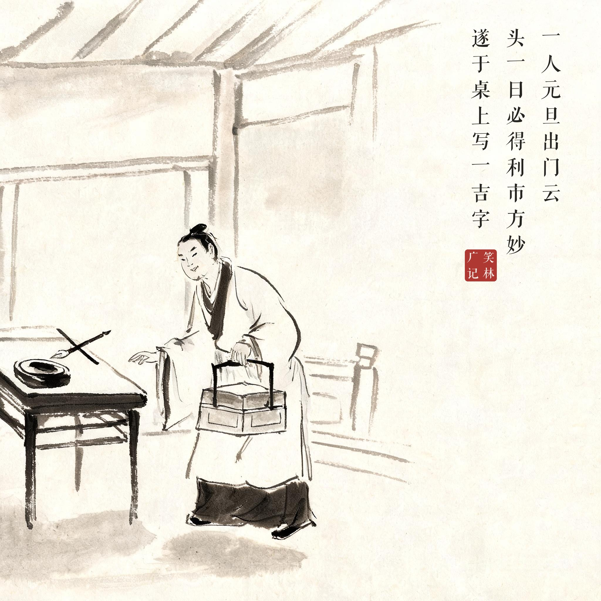
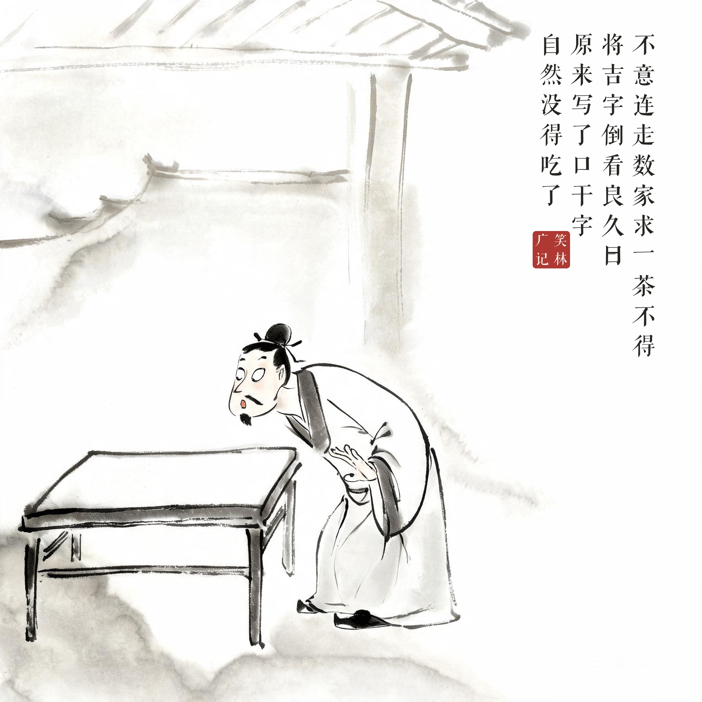

《笑林广记 · 谬误部》（[清]游戏主人纂集）
一人元旦出门云："头一日必得利市方妙。"遂于桌上写一"吉"字。不意连走数家，求一茶不得。将"吉"字倒看良久，曰："原来写了'口干'字，自然没得吃了。"再顺看曰，"吾论来，竟该有十一家替我润口。"
一个人元旦出门，说："年头必须讨个吉利。"于是写了个"吉"字放在桌上。不料连走几家，一口茶都没讨到。回来把"吉"字倒过来端详半天，恍然道："原来写的是'口干'，自然没得喝了。"
讨不来利市就倒打一耙——字没变，人变了：喝不到茶的怨气，硬是从笔画里找到了责任人。